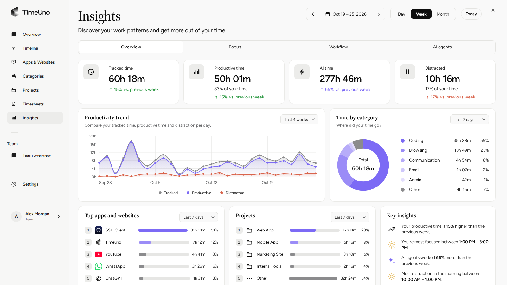
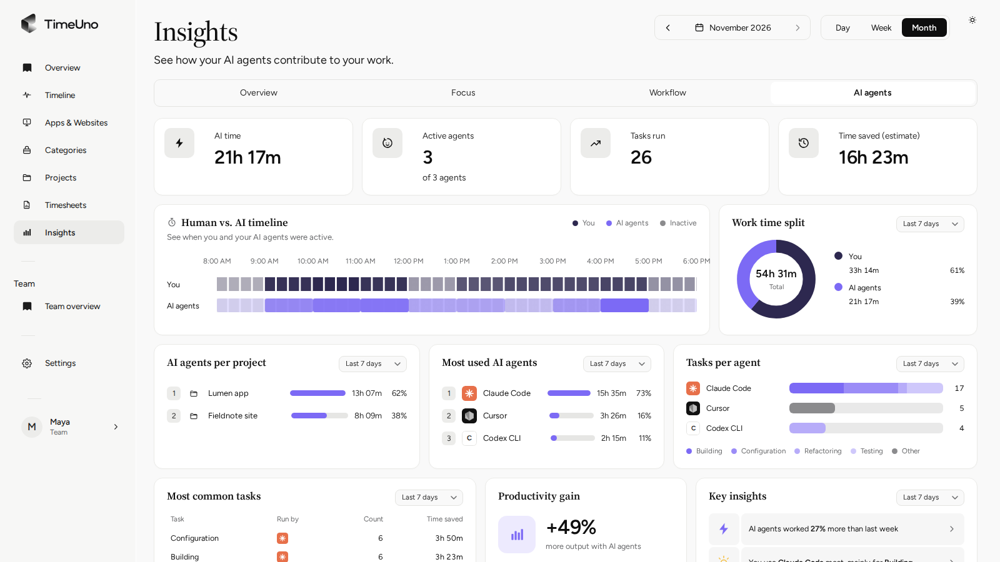
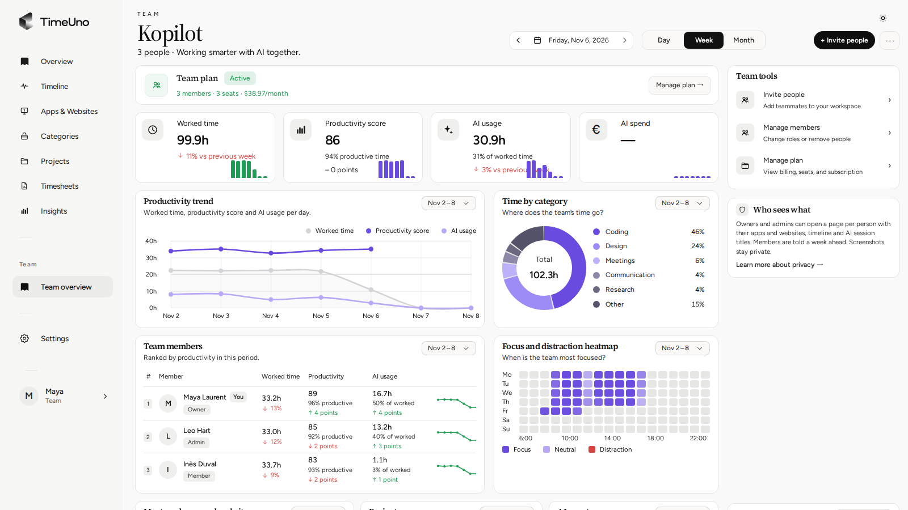

Automatic time tracking
Install the desktop app for macOS or Windows and the browser extension for Chrome, Firefox or Edge. Work is filed under your projects without a timer.
TimeUno records the apps, sites and projects you work in, with no timer to start or stop. It also shows how much of the work your AI tools did, per project.

Install the desktop app for macOS or Windows and the browser extension for Chrome, Firefox or Edge. Work is filed under your projects without a timer.
See your time and your agents' time side by side, with active agents, tasks completed and estimated time saved.
Know how long coding agents worked on each project, and tell that apart from the hours you spent yourself.
Tracked time becomes a timesheet per client and period. Edit any line, then export CSV or PDF or send a client approval link.

The team overview shows worked time, productivity and AI usage per member. Admins see a person's apps and sites only after a notice, and TimeUno shows numbers, never screenshots. Data is hosted in Germany.

14-day trial of the full product. No free plan.
$10.49/month, billed yearly
$14.99 billed monthly.
$13.99/seat/month, billed yearly
$19.99 per seat billed monthly.
macOS 11+ and Windows, plus browser extensions for Chrome, Firefox and Edge. A headless agent covers servers. There is no mobile app. See the download page.
Screen text is read locally and the picture is never saved or uploaded. You can pause tracking at any time.
No. It is built for billing and understanding your time, not for legal attendance records.
Yes, that is the idea behind TimeUno. See the Harvest alternative page. More answers are on the full FAQ.